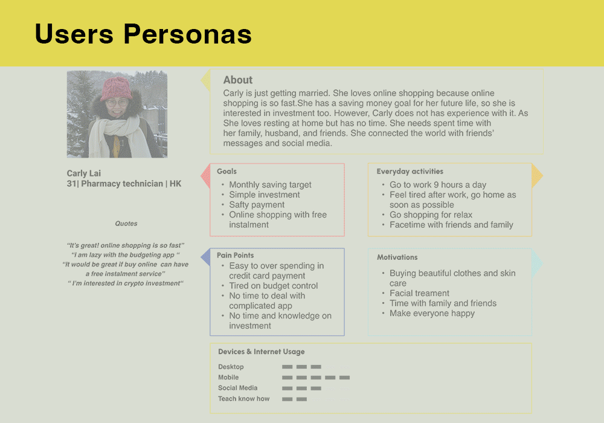

UX Design Project
PlutoPay App
PlutoPay is a mobile financial app that helps users find a way to have a safe and efficient way to do online shopping and money transactions everywhere, as well as finance management, assisted with the latest technology.
Why did I create this App?
I want to create a straightforward financial app that assists people in efficiently managing their finances. I believe technology combined with the design process can help people solve many financial problems and saving their time.

Solution
A solution can’t exist without a problem.
How to find out the problems?
The first stage I need to do is to find out the pain point of the users using a financial app in the existing market.
Research
"Research goals"
- To get different features, ideas, and financial solutions from competitors
- To identify usage patterns and most used features of the mobile payment app
- To analysis which tasks users would like to complete using a financial app


What do I get from Competitive Analysis?
The primary risk for our app is that some strong capital competitors seem to provide a full range of financial services and a high standard of security support. For example, money transfers and online payment in secure ways, such as QR codes or virtual payment. This could make it hard for us to stand out. That said, through the competitive analysis, we get different features, ideas, and financial solutions from competitors. The global coronavirus pandemic catalysed the commerce trend in 2020. So there’s still a chance to offer a more compelling product and steal a market share.
Insight from Survey finding
The survey was conducted with 15 Participants and shared on CareerFoundry slack’s channel and what’s app group.
Online shopping and money transfer to different people's accounts play a significant part in the online transaction market. Over 20 % of responses take the investment in the attractive feature. We may explore the need for investment features in the notice.
Insight from user intwerview
The attractive and unique feature is essential to attract new customers, as there are too many ways to make payments online. However, users don’t want to catch it up because of the fast-growing technology. Besides, the Money transfer service is still an attractive feature in a finance app. Notable that cryptocurrency is one of the key features that need to be studied; some users are willing to invest in it, although it’s a high-risk investment.
Ideation
What have I analysed from the ideation process?
Users Personas - Empathy Map - User Journey
After the ideation process, I found that our user needs some financial services which will help them save time. They want some simple but helpful features in the financial app, but they can use it without thinking, which is useful. Some unique features are generated in this process: “Smart split” to help the user split the cost in a smart way by using the scanning technology and user and the “Smart Saving” feature to help the user choose the saving plan in a simple way by using AI investment technology.
View for DetailsIdeation
What have I analysed from the ideation process?
Users Personas - Empathy Map - User Journey
After the ideation process, I found that our user needs some financial services which will help them save time. They want some simple but helpful features in the financial app, but they can use it without thinking, which is useful. Some unique features are generated in this process: “Smart split” to help the user split the cost in a smart way by using the scanning technology and user and the “Smart Saving” feature to help the user choose the saving plan in a simple way by using AI investment technology.
View for DetailsDesign
User flow
The most interesting part is creating the user’s scenario, in which I could carefully design
the flow to make it simplest since users will leave if they feel frustrated with the flow.
Based on the user personas, Aki needs a way to split the cost with her friends in a simple
way. So I create the user flow as
below

Low-fidelity Protype and Mid-fidelity Protype
The low-fidelity and Mid-fidelity are crucial to me too, which helped me save time and record my flash ideas in my mind. By drawing the low-fi wireframe, I can clear your mind on every page function and action I want my user to complete.
High-fidelity Prototype
Accessability evaluation
What have I analysed from the Accessability evaluation?
I do not have much time to focus on this part in this case study, but I found that this is a very important part of every product. I hope to explore this part in the near future, and I think if I could work it in detail by studying and following the Web Content Accessibility Guidelines (WCAG). I find some of the most common and essential accessibility guidelines to consider when designing user experiences. For example, Placeholders in the search bar, font size, distraction or interruption, and the contrast of the fonts and background colour are revised.
View for DetailsUsability Test
What do I get from Usability Test?
Testing and Analysis
This study aims to observe and measure the app’s learnability and efficiency. I have conducted usability testing with 6 participants. I enjoyed the usability observations, where I could find many problems and then improve the product prototyping model. For example, users would be frustrated about finding the entry point, curious about the difference between the choices of saving targets, and annoyed about the split course sequence. I am pleased with the result and learned much from the users’ comments. After usability tests, you will discover how to turn complicated into simple.
 View for Details
View for Details
Challenges
This was my first time designing a financial banking experience. Significantly, banking app services are trending all over the world, but I had yet to try them before and never knew what the difference is from traditional banking. The challenge I had during this process was to think about the smooth user flow and creating unique features. What is the best way to give users a great and smooth “Split-cost and Smart-saving” experience? Why do they get frustrated with financial services?
I am challenged by some parts of the design process, such as the format of the information architecture and the content under each page. I spent much time on study and refining the sitemap. Apart from the sitemap, I pay much attention to the material design guidelines, which I have yet to get used to following before.
I overcame those questions and challenges was to asking my mentor and peers in the UX community for their feedback, user tests, and research online. They gave me great insights and let me think about the UX approach with empathy.
Takeaways
For the next time, I have to improve my technical skills in Figma. It is not easy to finish a project without proficiency in the tool—for example, the application of the components and animated effects in Figma to perform high-fidelity Prototyping.
Besides that, I will pay more attention to web content accessibility, which is a curial part of the end-to-end design. I will explore some Figma plugins, such as Stark, to improve the diversity design.